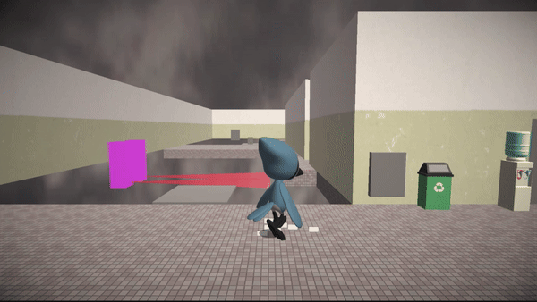
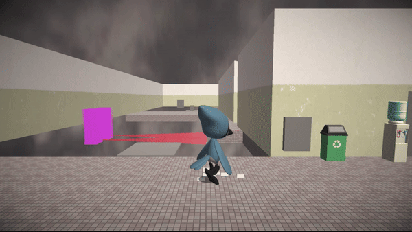
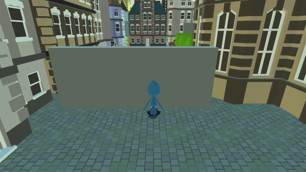
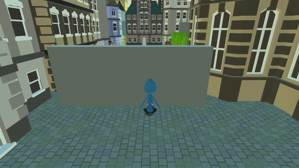

Clipped Wings
Genre: 3D Puzzle-Platformer
Engine: Unity
Team Size: 1
Jay the Blue Jay was a loud and arrogant bird, with a love for daring aerial stunts and tricks. In "Clipped Wings", Jay's world crashes down when an accident robs him of his ability to fly. Stripped of his wings and grounded for the first time in his life, Jay embarks on a journey through the stages of grief, fighting with his new reality.
Designed
- Camera Mechanics
- Gameplay Mechanics
- Level Designs
- Puzzle Designs
Programmed
- Movement System
- Camera Systems
- Dialogue System
- Puzzle Mechanics
- Save System
- Cinematic System
- User Interface System


 

 
